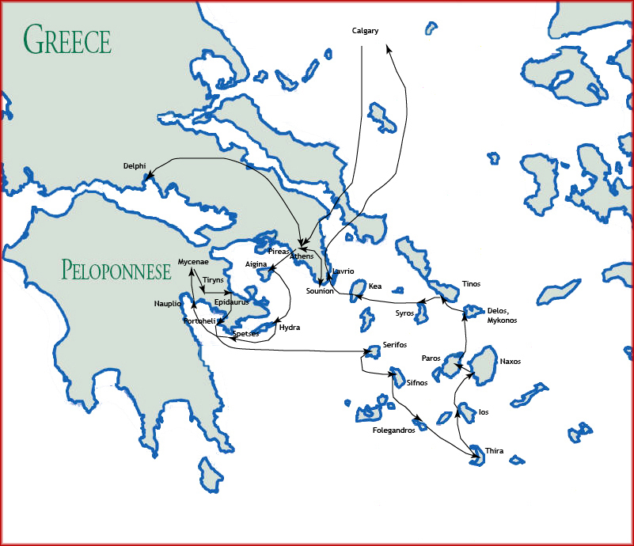

[ Home ] [ Travel ] [ Photography ] [ Pets ] [ Games] [ Rowing] [ Physics ]

A Visit to the Greek Isles - Itinerary
Travel
Cruises
Past Cruises (Diaries)
Future Cruises
Rogues Galleries
Land Trips
Diaries (Land Trips)
Hawai'i - Big Island - 04'01
Hawai'i - Maui - 05'02
Hawai'i - Big Island - 04'03
Hawai'i - Kaua'i - 09'04
Hawai'i - Big Island - 04'06
Hawai'i - Maui - 04'06
Mainland China - 05'07
Phoenix, Arizona - 12'07
Greek Isles - 05'08
Hawai'i - Kaua'i - 09'08
Hawai'i - Big Island - 09'09
Hawai'i - Maui - 05'12
Hawai'i - Big Island - 04'13
Ireland - 08'13
Mexico - Cancun 11'13
France/Belgium/Lux 07'15
Hawai'i - Big Island - 05'17
England / Wales - 06'17
Hawai'i - Big Island - 09'19
Photography
Cameras
Underwater
Pets
Tara
Blackie
Whitey
Muffy
Ollie
Rusty
Fluffy
Rufus&Dufus
Games
Rowing
Physics
Trip Itinerary

| Day | Date | Description |
|---|---|---|
| 1,2 | May 21, 22 | Flight to Athens - Calgary => Frankfurt, Frankfurt => Athens, brief walking tour, first Greek dinner |
| 3 | May 23 | First day in Athens - Plaka, Acropolis, Parthenon, gift exchange shopping, afternoon and dinner on our own |
| 4 | May 24 | Second day in Athens, Sounion - National Arch. Museum, Cycladic Museum, Temple of Zeus, Temple of Poseidon (Sounion) |
| 5 | May 25 | Outing to Delphi - Drive to Delphi, Arakia, Delphi Museum, dinner and evening on our own |
| 6 | May 26 | Sailing to Aigina - tour Agora, drive to Pireas, sail to Aigina (Agia Marina), explore town |
| 7 | May 27 | Sailing to Hydra - Temple of Aphaia, bus to Palaiochora and Aigina Town, sail to Hydra, Hydra Town |
| 8 | May 28 | Sailing to Spetses, Nafplio - sail to Spetses, Spetses Town, sail to Nafplio, explore Nafplio |
| 9 | May 29 | Exploring ancient Greece - bus to Mycenae, Tiryns, Epidaurus, bus to Portoheli, explore Portoheli |
| 10 | May 30 | Sailing to Serifos - sail to Sifnos, rough seas divert to Serifos, Livadi, dinner onboard |
| 11 | May 31 | Sailing to Sifnos, Folegandros - sail to Sifnos, Kamares (swim), sail to Folegandros, bus to Chora, BBQ |
| 12 | June 1 | Sailing to Thira (Santorini) - sail to Thira, up the gondola, Thira Museum, Kamari, ancient Thira, Fira, down the donkey path |
| 13 | June 2 | Sailing to Ios - sail to Ios, Manganari (swim), lobster, Gialos, climb to Chora |
| 14 | June 3 | Stuck in Ios - high winds, up to Chora again, lazy afternoon |
| 15 | June 4 | Sailing to Naxos - sail for Naxos, Kastraki (swim), Naxos Town, bus to Chalki, Melanes Valley (deserted Kouros) |
| 16 | June 5 | Sailing to Paros - sail for Paros, Amoelas (swim), Naousa, bus to Paroikia, Ekatontapyliani, Lefkes, back to Naousa |
| 17 | June 6 | Sailing to Delos, Mykonos - sail for Delos, tour ruins, sail for Mykonos, Agios Ioannis (swim), new cruise port, Mykonos Town |
| 18 | June 7 | Sailing to Tinos, Syros - sail for Tinos, Tinos Town, Panagia Evangelistria, sail for Syros, Sykamia (swim), Ermoupoli, gift exchange |
| 19 | June 8 | Sailing to Kea, Lavrio - Sail for Kea, Giaros, Otzias, Korissia, bus to Ioulis, back to Korrisia, sail for Lavrio |
| 20 | June 9 | Return to Calgary - bus to airport, Athens => Frankfurt, Frankfurt => Calgary |